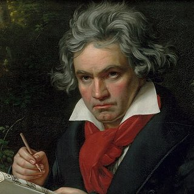

Compositores › Ludwig van Beethoven

Ludwig van Beethoven
El puente entre el Clasicismo y el Romanticismo: siguió componiendo obras maestras incluso después de quedarse completamente sordo.
Su vida
Nació en Bonn, Alemania, en diciembre de 1770. Su padre, cantante de la corte, lo empujó a actuar como niño prodigio siguiendo el modelo de Mozart.
En 1792 se trasladó a Viena, donde estudió con Haydn y se hizo famoso como pianista de improvisaciones arrolladoras. Hacia los treinta años empezó a perder el oído: en 1802 confesó su desesperación en una carta a sus hermanos, el «Testamento de Heiligenstadt», pero decidió seguir escribiendo.
Compuso 32 sonatas para piano, 9 sinfonías, conciertos y cuartetos. La Novena Sinfonía, estrenada en 1824 cuando ya era sordo, termina con el Himno a la alegría, hoy himno de la Unión Europea.
Retrato: Joseph Karl Stieler (1820), dominio público, de Wikimedia Commons.

Curiosidades
- Para Elisa no la publicó él: el manuscrito se encontró y se imprimió solo en 1867, cuarenta años después de su muerte. No se sabe con certeza quién era «Elisa».
- El nombre «Claro de luna» no es suyo: se lo dio el crítico Ludwig Rellstab, que comparó el primer movimiento con la luz de la luna sobre el lago de Lucerna.
- Cuando ya estaba casi sordo, usaba trompetillas acústicas y apoyaba una varilla de madera en el piano para sentir su sonido.
Al piano
- Beethoven vive de contrastes: piano y forte repentinos, acentos, silencios. Respeta las dinámicas escritas.
- En el primer movimiento del Claro de luna cambia el pedal en cada cambio de armonía para que el sonido no se empaste.
- En los pasajes rápidos estudia despacio con metrónomo y sube la velocidad poco a poco.
Sus piezas para aprender 9 piezas

Apréndela nota a nota con Piano Learning
Con «Espera la nota» la pieza se detiene hasta que tocas la tecla correcta, en el móvil o en tu propio piano (la app te escucha). Manos por separado, velocidad desde el 10 %, partitura siempre delante.
Gratis como La Campanella, la Marcha turca, Jingle Bells y Frère Jacques. Cientos de piezas más con una única compra, sin suscripción.